这一课表面上是「问时间」，实际上是整本书里时态最密集的一课。15 道题用了七种不同的时态：When did you start…（过去）、When do you feel…（习惯）、When will you get married（将来）、When would you like to…（虚拟）、When are you going to finish（计划）、When do you think you will…（预测）、When was the last time…（具体过去）。时态听错，答案就会答成另一个时间——这是中国学生在这一课最容易栽的地方。
第 11 题是个社交陷阱。When will you get married? 用 will 问，语气上把结婚当成一定会发生的事。中国人常答「还没想好」，但英语里更自然的是用幽默把问题挡回去：
Ask me again in five years — I'll have a better answer.
或者 You'll be the first to know. 这两句既回答了又没承诺任何东西。
B · 时间表达的介词：in / on / at
in + 年 / 月 / 季节 / 时段
in 2010 / in May / in summer / in the morning / in my twenties
on + 星期 / 具体日期
on Sunday / on May 1st / on my birthday
at + 钟点 / 特定时刻
at seven / at noon / at night / at that moment
ago / last / yesterday
前面不加介词：two months ago / last year / yesterday
C · 八个让时间答案变具体的短语
「经常」「有时候」这类答案老师听得太多了。用下面这些把时间锚定住，回答立刻可信。
whenever…
「每当……」—— 最常用，比 when 更强调反复
every single time…
「每一次都」—— 加强语气，暗示这很典型
the moment…
「一……就……」—— The moment the deadline is close, I…
not until…
「直到……才」—— 有对比效果
around the time…
「大约在……的时候」—— 不确定时的安全说法
for the first time
「第一次」—— 配过去时用
these days
「最近」—— 和过去对比时用
back then
「那会儿」—— 口语里回指过去，非常自然
03课本例题：从个人经历到一句总结
例题问 When do you feel happy?。这段答案的结构很值得学：先给两个具体时刻（家人健康、生孩子、升职）→ 再转成一句一般性的道理。前半段负责可信，后半段负责分量。
Example
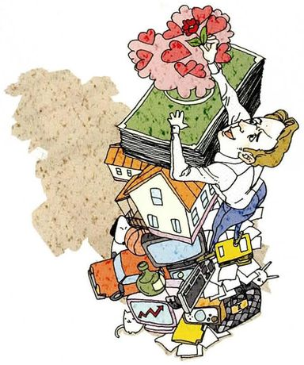
When do you feel happy?
What you seeA woman bent under an enormous pile — books, a house, a television, a bicycle, papers — while she reaches up for a bouquet of pink flowers on top of the stack. Everything she carries, and the one thing she's reaching for.
What it means你什么时候感到幸福。注意 feel happy 后面不加 about，直接说时间条件。
Say it like this"I feel happy whenever my family is healthy. But I was especially happy when I had a baby, and when I got a promotion, I felt happy too. Still, there's only one way to be happy permanently — we have to feel good about who we are, and remember that happiness comes from the small things we actually accomplish. You can't feel happy unless you can enjoy what's around you now."
这段里三个值得抄走的结构：
① whenever my family is healthy —— 用 whenever 表达「持续的条件」，比 when 更贴切；
② But I was especially happy when… —— 「尤其」用来挑一个最突出的时刻；
③ You can't feel happy unless… —— 用 unless 把结论说成必要条件，比 you should 有力。
「我升职的时候很开心」别说 I happy when I promotion。
中文可以省略动词和冠词，英语不行：I felt happy when I got a promotion.
这一课有 15 道题，每道都要用完整句子，省略习惯会暴露得很明显。
04十五个问题：怎么答出层次
每张卡三段：What you see 照着图描述，What it means 说清这题问的是哪个时间（并提醒时态），Say it like this 给三档答案：① 一句短答 / ② 时间 + 情形 / ③ 加一个对比或感受。第三档请换成你自己的真事。
01
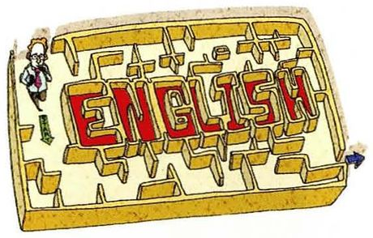
When did you start learning English?
What you seeA wooden jigsaw puzzle with the word ENGLISH cut into it, pieces fitted together, one piece still separate.
What it means你什么时候开始学英语的。did 是过去时 —— 回答必须用一般过去时。
Say it like this①In primary school, about third grade. ②I started in third grade, when I was about nine. It was compulsory by then, so my whole class started at the same time. ③Formally in third grade, when I was nine. But I'd say the real starting point was much later — around nineteen, when I first had to read something I actually wanted to read. Before that it was a subject I was good at and couldn't use. So: thirteen years of studying, and about five years of learning.
02
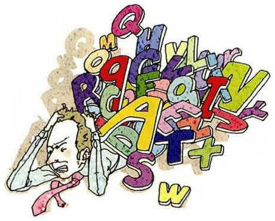
When do you feel like giving up on English?
What you seeA man lying back with his eyes closed, buried under a chaotic pile of enormous letters — A, E, R, Y, L, W. The language has become a weight.
What it means你什么时候想放弃英语。do 是习惯 —— 回答要说明「通常在什么情况下」，不是某一次。
Say it like this①Whenever I can't follow a conversation and everyone else can. ②Usually when I've been reading English for hours and then can't say one sentence out loud. The gap between what I understand and what I can produce is the frustrating part. ③Every time I watch a film without subtitles and catch maybe seventy percent. That moment — when you understand the joke a second late and everyone's already laughing — that's when I want to stop. But I've noticed it passes within an hour, so I've stopped treating it as a real feeling and more as a weather condition.
03
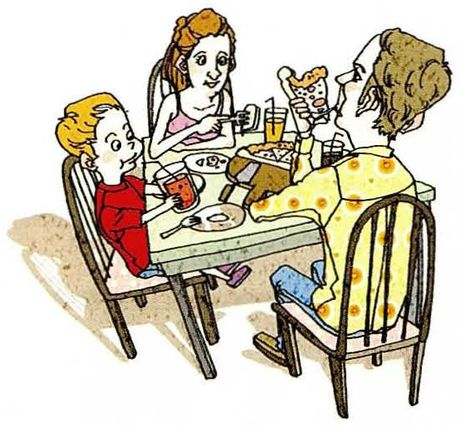
When does your family eat out?
What you seeA family at a table in a restaurant — two children and two adults, plates in front of them, a waiter approaching. Eating together, somewhere other than home.
What it means你家什么时候出去吃饭。does 是因为主语是 family（单数）。注意 eat out 是「在外面吃」。
Say it like this①On birthdays and at New Year, mostly. ②We eat out on birthdays and when someone's been away. My mother cooks the rest of the year, so it takes an occasion. ③Almost never when I was a child — my parents thought it was a waste. Now they're older and my mother's tired of cooking, so we go out about once a month, usually on a Sunday. What's funny is that my father still complains about the price every time, and then orders the most expensive thing.
04
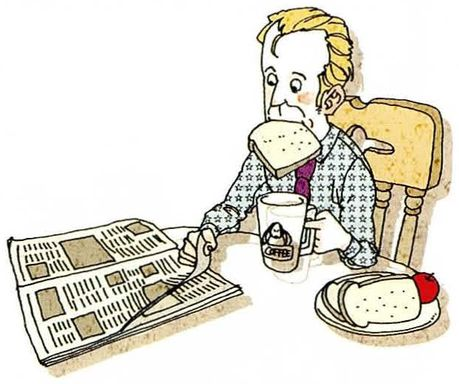
When do you read the newspaper?
What you seeA man in a dressing gown eating breakfast at a table, holding a newspaper open beside his plate and cup. A morning ritual.
What it means你什么时候看报纸。这题现在可以顺势说「我不看报纸了」—— 真实且有话可聊。
Say it like this①Never, honestly — I get the news on my phone. ②I don't read a physical newspaper anymore. I usually look at news on my phone in the morning, but it's a completely different habit — I skim headlines instead of reading anything. ③I stopped years ago, and I've noticed the cost. When I read a paper I'd finish articles I hadn't chosen — something on page four about a country I knew nothing about. Now I read what the algorithm thinks I want, which is narrower. So I'd say I read more news and understand less.
05
When did you fall in love for the first time?
What you seeA boy and a girl kneeling on the ground, papers scattered between them, and a red heart floating above the note they're passing. Very young, very serious.
What it means你第一次坠入爱河是什么时候。fall in love 是固定搭配，配过去时。
Say it like this①I was about sixteen, I suppose. ②I'd say fifteen or sixteen, though at the time I didn't call it that. It was the person I sat next to for a year and never said anything to. ③Sixteen, and it was entirely in my head — we spoke maybe four times. What I remember is the intensity, not the person. I've since decided that the first one isn't really about anybody, it's about discovering that you can feel that much. Which is why I'd be slightly worried if a sixteen-year-old told me they were in love and it sounded reasonable.
06
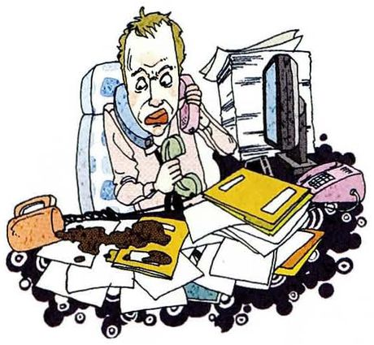
When do you feel stressed?
What you seeA woman slumped at a desk, phone held to her ear, a computer screen and piles of paper around her. The desk has won.
What it means你什么时候感到有压力。do 是习惯 —— 要说「通常在什么条件下」，不是某一次。
Say it like this①When several deadlines land in the same week. ②Usually when I have three things due at once and none of them is close to done. One deadline is fine; three is where I stop being able to start. ③I've worked out that it isn't the amount of work — it's ambiguity. If I know exactly what to do and it's simply long, I'm fine. What gets me is not knowing whether I'm on the right track, because then I can't tell if I'm working or wasting time. So the worst month of my degree had the least work in it.
07
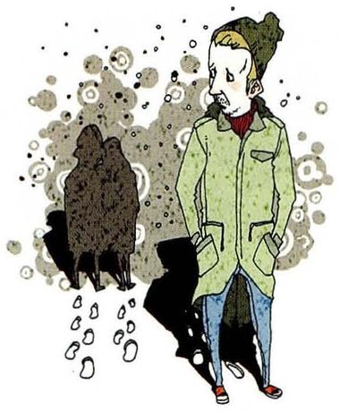
When do you feel lonely?
What you seeA woman in a green coat standing still, looking off to one side, while a blurred dark mass of people swirls behind her. Surrounded and alone.
What it means你什么时候感到孤独。lonely（孤独，心理感受）和 alone（独自，客观状态）完全不同。
Say it like this①More often than I'd admit. ②Oddly, in crowds. I'm fine on my own for days, but a room full of people talking to each other and not to me is much worse. ③The specific moment is Sunday evening. Not Sunday night — that's nearly Monday and I'm already thinking about work. It's that flat hour around six when everyone else seems to be having dinner with somebody and I'm deciding what to eat alone. It passes, but it arrives with remarkable punctuality.
08
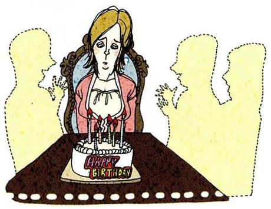
When do you think of your friends?
What you seeA woman sitting alone at a long table with an open book and a cake with candles, and pale silhouettes beside her where people used to be.
What it means你什么时候想起朋友。do 是习惯。注意 think of（想起）和 think about（考虑）的差别。
Say it like this①Whenever something funny happens and there's nobody to tell. ②Mostly when something small goes right or wrong. I'll see something absurd on the way to the lab and think of one specific friend who'd find it funny. ③When I read something good, which is inconvenient because I can't share a page. But the strongest one is when I go back to my hometown — every street has somebody attached to it. There's a bus stop where I waited an hour with someone in the rain in 2015, and nobody there now knows that. It's a strange kind of remembering.
09
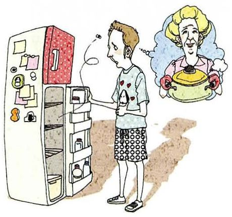
When do you think of your parents?
What you seeA man standing at an open refrigerator, looking in, and above him a thought bubble of his mother holding a covered dish. Home cooking, remembered.
What it means你什么时候想起父母。和第 8 题是同一句型，可以对照着答。
Say it like this①Mostly when I'm cooking badly. ②When I eat something that doesn't taste like anything, and when something goes wrong and my first instinct is still to call them. ③Whenever I open the fridge and there's nothing in it, which is often. My mother would find that unacceptable in a way I can't reproduce — she keeps enough food for a week without thinking about it. And more seriously, whenever I catch myself doing something exactly the way she does it, which has started happening in my late twenties with increasing frequency.
10
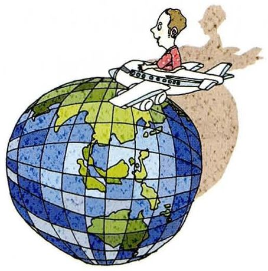
When would you like to take a round-the-world trip?
What you seeA man sitting cross-legged on top of an aeroplane flying over a large globe, arms out. Absolute freedom, drawn small.
What it means你什么时候想去环球旅行。would like 是愿望，不是计划 —— 回答要配一个条件。
Say it like this①Once I've finished my degree, ideally. ②I'd like to do it when I'm between things — after the PhD and before whatever comes next. That's the only window where a year away doesn't cost you anything. ③I've thought about this and concluded I'd want to do it in my late twenties, which is now, which is also the worst possible time. After that the window closes — you either have a job you can't leave or a family you can't take. So my honest answer is that it's a trip I keep postponing in order to be sensible, and I'm aware that being sensible indefinitely is how people end up never going.
11
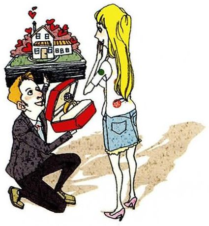
When will you get married?
What you seeA man kneeling on one knee holding up an open ring box, a woman standing in front of him. The ring box has a house on it.
What it means你什么时候结婚。will 把结婚当成既成事实 —— 这题答得体面的关键是不要正面承诺。
Say it like this①You'll be the first to know. ②No idea, honestly. I'm not even in a relationship, so the question is a bit ahead of the facts. ③I'd have to find someone first, which is the part nobody asks about. If you want an honest prediction: probably later than my parents expect and earlier than I currently feel ready for. And I've noticed the question comes more often now that I'm twenty-five — it's less about me and more about everyone wanting to know which way my life is going.
12
When are you going to finish school?
What you seeA pile of thick, worn reference books with a black graduation cap balanced on top. Everything it took, in one stack.
What it means你什么时候毕业。are going to 问的是已有安排的将来 —— 回答要给具体时间。
Say it like this①Next June, if everything goes to plan. ②I'm due to finish next summer — the thesis has to be submitted by March, so realistically the work ends around New Year. ③Formally next June. In practice, whenever the last experiment behaves — which is the honest answer anyone in my position would give. I've stopped saying "next year" to my parents because they start planning, and I'd rather disappoint them once, at the end, than every three months along the way.
13
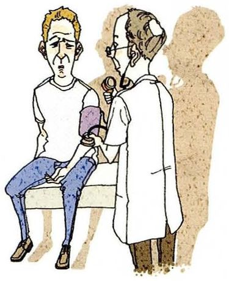
When do you see a doctor?
What you seeA patient sitting on an examination table while a doctor in a white coat wraps a blood pressure cuff around his arm. Routine, serious.
What it means你什么时候去看医生。do 是习惯。注意 see a doctor，不用 go to a doctor。
Say it like this①Only when something's clearly wrong. ②Almost never, which is a bad habit. I go when something lasts more than a week and I've started worrying about it. ③Not often enough, and I know exactly why. It's not the cost — it's that going means admitting something might be wrong, and I'd rather not know. My father is the same, and he once ignored something for eight months that turned out to be treatable and would have been easy a year earlier. So I'm aware of the pattern and I haven't yet broken it.
14
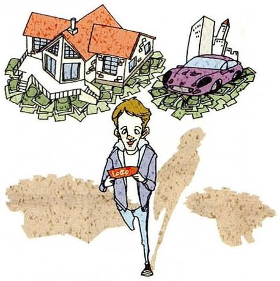
When do you think you will win the lottery?
What you seeA man jogging along holding a red Lotto ticket, and above him a big house and a sports car sitting on piles of banknotes. The dream, in mid-air.
What it means你觉得你什么时候会中彩票。这题是玩笑题 —— 老师想听你怎么接玩笑，不是要你算概率。
Say it like this①Never, since I've never bought a ticket. ②Never. I don't buy tickets, so my odds are exactly zero, which is at least a definite answer. ③Never — and statistically that's the one prediction I can make with total confidence. I did buy one once, for the fun of it, and I remember being genuinely excited for about two days. So the ticket was worth the two yuan, but not for the reason the lottery intends.
15
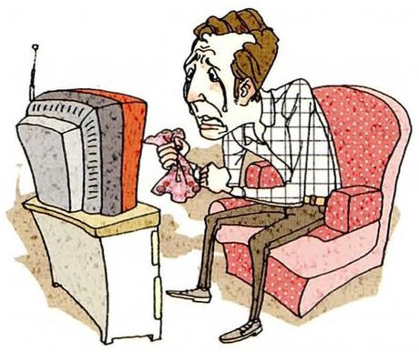
When was the last time you cried?
What you seeA man sitting in a pink armchair in front of an old television, tissue in hand, face crumpled. Whatever's on the screen has got to him.
What it means你上次哭是什么时候。was the last time —— 要一个具体的时间和场景。
Say it like this①A few months ago, watching a film. ②About two months ago, at the end of a film — not because it was sad, but because it was over and I wasn't ready for it to be. ③In the summer, on the phone to my mother. Nothing dramatic had happened. She asked whether I was eating properly and I said yes and then couldn't speak for a moment. It was the gap between the question and the answer that did it — she knew I was lying and asked anyway.
I'd say the hour after I finish something. Not during — during is just relief that it's nearly over. It's the next hour, when there's nothing pending and nobody's waiting for anything. I've started to notice that I'm happiest in the gaps, which probably means I should arrange for more gaps and fewer things.
「不是……而是……」这个纠正（Not during — it's the next hour）让回答立刻有了细节。最后那句自我推论（which probably means…）是从事实到结论，比单纯描述高一档。
Is there a time of day when you're at your best?
Early morning, and it took me years to admit it because I wanted to be a night person. Between seven and ten I can do in one hour what takes me three in the afternoon. After eight in the evening I'm useless, but I stay at my desk anyway, which is the single worst habit I have.
it took me years to admit it because I wanted to be a night person —— 承认自己想成为什么样的人和实际是什么样的人之间的落差，这种自我认识在口语课里非常出彩。
When do you think people change the most?
Not when things are going well, that's for sure. I'd say the biggest jumps happen in the six months after something ends — a relationship, a job, a city. You don't change much while you're inside a situation; you change when you're out of it and have to work out who you are without it.
把「什么时候」答成「什么条件下」，是这个回答技巧的核心。You don't change while you're inside a situation 这句话本身就是可以抄走的观点。
Do you remember the first time you spoke English to a foreigner?
Very clearly, unfortunately. I was about twenty and somebody asked me for directions in a station. I understood the question perfectly and produced about four words, and then apologised for my English, which I now think is the worst possible response. What I remember is the shame, which is disproportionate — the man got where he was going.
which I now think is the worst possible response —— 回头评价当时的自己，是很成熟的叙述方式。而且这段本身就是中国学生的共同经验，老师听了会很有共鸣。
When was the last time you were really proud of yourself?
Small thing: last month I fixed a bug I'd been stuck on for eleven days. Nobody else cared — it was one line. But I'd been telling myself I wasn't good enough to find it, and then I did. Pride is a strange emotion; it doesn't scale with the size of the achievement, it scales with how much you doubted yourself beforehand.
十一比一的比例（十一天 vs 一行代码）让故事具体。最后那句关于骄傲的观察（it scales with how much you doubted yourself）把一个私人小事提升成了普遍洞察。
When do you think you'll feel like an adult?
I keep assuming it happens at some point, and the people ten years ahead of me say it never does. What's changed is that I now do adult things — I pay rent, I book my own dentist — but I don't feel like an adult doing them. So maybe the honest answer is that adulthood is a set of tasks rather than a feeling, and I've been waiting for a feeling that isn't coming.
最后那句 adulthood is a set of tasks rather than a feeling 是一个真正的观点，不是套话。这种句子会让老师停一下。
07这节课最容易犯的错
这一课的错误集中在时态和介词上 —— 因为每道题都在问时间，时态错了就等于答案错了。
✗When did you started learning English? ✓When did you start learning English?
did 已经表示过去，后面的动词必须用原形。这是中国学生最常见的错误之一，尤其是说快了的时候。
✗I started to learn English in 2010 year. ✓I started learning English in 2010.
年份后面不加 year（2010 已经是年份）。另外 start doing 比 start to do 更自然。
✗I will finish school after two years. ✓I'll finish school in two years.
「两年后」用 in + 时间段；after 后面要接具体的点（after 2028）。这一课的将来时间题经常用到。
✗When I was nine years old, I have started learning English. ✓When I was nine, I started learning English.
过去的时间点配过去时，不能用现在完成时。而且 nine years old 里 years old 常可省略。
✗I feel lonely when I am alone. 想区分两者 ✓Being alone is fine; feeling lonely is different.
这两个词在本课第 7 题里正面撞上了。准确说法是：alone = 独自（客观），lonely = 孤独（主观）。
✗I fall in love when I was sixteen. ✓I fell in love when I was sixteen.
fall in love 用一般现在时只表示「现在爱上」，讲过去的事必须用 fell。
✗When will you marry? 想说「你什么时候结婚」 ✓When will you get married?
marry 是及物动词，后面要接宾语（marry sb）。不带宾语时用 get married。这个区别很多人不清楚。
✗I have seen the doctor last month. ✓I saw the doctor last month.
last month / yesterday / two days ago 这类明确过去时间，一律用一般过去时，不能用现在完成时。
08五十分钟怎么用
这一课最值得花时间的是第 02 节的时态表 —— 它比任何一个具体答案都有用。
课前 10 分钟：只看第 02 节 A 表的七种时态先认清每道题的问句用了什么时态，再决定自己怎么答。这一步做对，答案就自然对了。